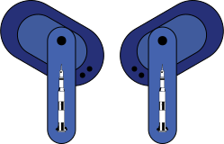

Thats one small step for man, one geant leap for mankind

Saturn V
Saturn V est le nom de la fusée spatiale qui a été utilisée par la NASA
pour les programmes Apollo et Skylab entre 1967 et 1972, en pleine
course à l’espace entre Américains et Soviétiques.
Il s’agissait d’un lanceur à plusieurs étages, à ergols liquides,
dernier né de la famille de lanceurs Saturn conçue sous la direction de
Wernher von Braun au Centre de vol spatial Marshall (MSFC) à Huntsville
en Alabama, en collaboration avec les sociétés Boeing, North American
Aviation, Douglas Aircraft Company ou IBM comme principaux
entrepreneurs.
Saturn V reste encore aujourd’hui le plus puissant lanceur spatial qui
ait été utilisé en opération, que ce soit du point de vue de la hauteur,
de la masse au décollage ou de la masse de la charge utile injectée en
orbite. Seule la fusée russe Energia, qui ne vola que pour deux missions
de test, la dépassa légèrement au niveau de la poussée au décollage.
Saturn V, qui a été conçue pour lancer le vaisseau spatial habité Apollo
permettant les premiers pas de l’homme sur la Lune, a continué son
service en envoyant en orbite la station spatiale Skylab.
Édition Saturn V
Spécificité
- Technologie LDAC
- Batterie de 400 mAh (16 heures)
- Réduction du bruit ambiant
- Chargement 25W (10 minutes par charge)
- Bluetooth 5.2